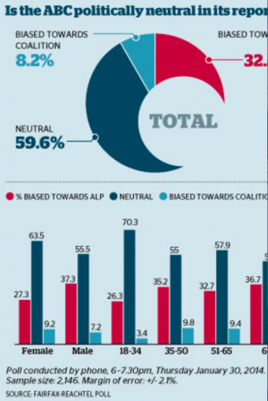

An interesting graphic which the SMH thought was better presented in a form in which you can't read whatever was near the right hand margin. NG (ed)Claims of a left-wing bias at the ABC are seldom absent from public discussion. These claims quickly lead to suggestions that the ABC should privatised.
Of course, bias and impartiality are notoriously elastic and subjective concepts. The only arbiter that can make sense of this tangle of subjectivity is the Australian public. The ABC’s impartiality can only be judged by its perceived alignment with the views of the Australian public as judged by the Australian public.
But how are we going to determine what the Australian public thinks is biased or impartial?
Why not just ask them?
Why not conduct regular ABC impartiality polls? Why not create a statistically accurate reading of what the stakeholders that fund the ABC think of its performance?
While it is easy to be sympathetic to arguments that public broadcasting is antiquated and irrelevant in an era when news and information is a simple finger-tap away, our expanded media-verse is characterised by weakened credentials and authority, and diminished responsibility accompanied by associated risks of wilful misinformation and manipulation.
Given these risks, it is relatively straightforward to articulate a renewed and refreshed case for public broadcasting that is founded on reliable, responsible and impartial reporting transparently founded on research and facts. But without radical impartiality this renewed argument for public broadcasting collapses.
An ABC impartiality poll could be conducted every six months by independent parties under competitive contracts and funded directly by Government. Survey and sample design would need to be sophisticated, but this is well within the science and art of modern survey techniques. Much has been made of the inaccuracy of polls in relation to the recent Federal election, but these errors amounted to less than a few percent. The survey data, methodologies and results would be open for academic and journalistic review and an orientation to continuous improvement would be a core goal.
Reliable survey data would enable us to identify the public’s impressions of overall bias and also provide public feedback on lower level questions: for example, an assessment of the impartiality of leading current affairs programs, and even ratings of the perceived balance of reportage on specific issues.
This data could be used to provide the ABC with strong and specific direction for improving the public’s perception of its impartiality. ABC management would be expected to act on these findings and new incentives could be implemented to encourage them to do so. Critically, the ABC’s funding could be indexed to its measured ‘impartiality performance’. Impartially would become an organisation-wide KPI.
There would be numerous technical survey design issues. Should the surveys be anonymous? Should they be linked to individuals say via a tax file number? Of course, there will be those who attempt to game the system and that needs to be a design consideration. Everything important gets gamed to some extent. That is the very thing that we are trying to deal with.
In the era of elevated political correctness, virtue signalling, social media echo chambers and political polarisation it is all too easy for unrepresentative ideological enclaves to form within our critical institutions and they are difficult to dislodge. Creating real, immediate and pecuniary incentives is likely to be the only effective solution.
We depend on the public having access to accurate information and a range of views and analysis that, taken together, represent a balanced perspective. Our collective investment in the institution that is the ABC needs to be protected against the corrosive influence of ideological capture.
Improving our institutions is an arduous process that can only be achieved wilfully via a degree of political consensus that appears increasingly difficult to assemble. Intuitional innovation as a national competitive differentiator is something that needs greater recognition in Australian politics.
In a world where trust and truth have become scarcer, they have also become more valuable. The need to address a growing market failure in the production of trustworthy public information suggests a pressing rationale for public broadcasting. But it is a role completely contingent on radical impartiality.
to run polls on whether the public thinks you are impartial seems a sensible idea if you're in a battle for public funding and your opponents keep harping on about a lack of impartiality.
Whilst the public as ultimate pay masters must be in charge, I am uncomfortable with the idea that impartiality is important or that the public defines what impartiality means. The truth is seldom impartial and the choice of which truths to air is also seldom impartial, so there is an inherent tension between truth and impartiality. The truth of evolution is seen as deeply partisan to the fundamentalist! Also, important news is inherently political. Humans are political animals which begs the question of whether there is such a thing as impartial political news.
The logical way out is to demand that the public broadcaster is on the side of the general public in a long-run sense, providing it with those truths useful to it. That includes an educational role. Being on the side of the general public is not impartial though. It is the opposite side of special interests and foreign interests.
As a regular ABC listener and watcher, and occasional interviewee, I know it is biased. Subject selection and angles all slant to the left. Experts are frequently selected not for their expertise, but for whether they agree with the journalist's preconceived ideas.
The problem with asking the public whether it is biased is that most of the people you are surveying only occasionally watch or listen to the ABC, and then are not equipped to measure bias because they don't have a substantial enough grasp of what the ABC could alternatively have reported, and how they might have done that.
To work out its bias you need hard metrics which match what they report against the major political positions, and also the concerns of the public. You need to look even more deeply as to what words and phrases are used to describe each side of the case receives, and how much time and attention is given to each.
We already have a study by Leigh and Gans which found Graham is wrong in his viewing. Funny that.
Bias is in the eye of the beholder. I even had one person who once said Kerry O'Brien was biased because you could tell be his body language.
Do interviewers on the ABC interview LNP pollies different to ALP pollies.
I have not seen nor heard it.
ABC bias is a party political issue, and any survey will be hopelessly skewed by people who simply vote for their side. In particular, Murdoch readers will say it's biased, because that's what they've been told incessantly. To compound that problem, they're unlikely to watch or listen to what they're told is a sink of cultural Marxism, and so will have no independent observations. If there was a place for surveys, it would be in determining whether the ABC's bias mapped the bias of the Australian public on particular issues such as global warming. Even better, on whether the ABC's bias mapped the facts - which, as it's often pointed out, have a marked left-wing bias themselves.
Perhaps a survey about: questions such as :
is the ABC doing a good enough job addressing market failures?,
might be better.
For example it’s not real world possible for any commercial TV channel to regularly do hard edged consumer affairs shows .
I.e. a survey question could be ,did the ABC when it axed the Checkout fail what should be one of its core responsibilities ?
The problem with surveying the ABC audience is that from my experience on social media, the majority of right wing people already think that the ABC is biased to the left and they rarely watch it. We actually need the ABC to be that way inclined to make up for the rather strident right wing clamour from the "shock jocks" and the Murdock press.
I agree with Paul above that it's tricky and that there's a tension between truth and bias. People familiar with my schtick will not be surprised, but I'd interpose a citizens' jury of some kind as the arbiter of what is and is not appropriate. In other words, I'm wary of the 'vox pop' nature of polling, but would welcome a venue in which everyday Australians get to thrash things through and come to a considered view.
There are certainly things about the ABC's coverage of things that give me the irrits, but certainly less than the Murdoch press. The ABC also seem to be a little more vigilant in trying to get reasonable contrary right of centre views on the ABC than the Fairfax press – though the AFR has swung towards the Australian's formula. I certainly liked Michael Duffy's Counterpoint except for the climate scepticism stuff, not because I'm against scepticism – I'm for it and wont' be THAT surprised if climate scientists are revealed as over egging the pudding. But you have to be discriminating in who you have on – and he had on lots of people who seemed likely to be cranks on the quick sniff test I applied to them.